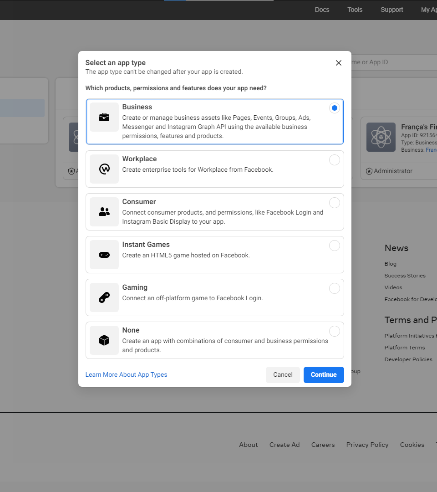
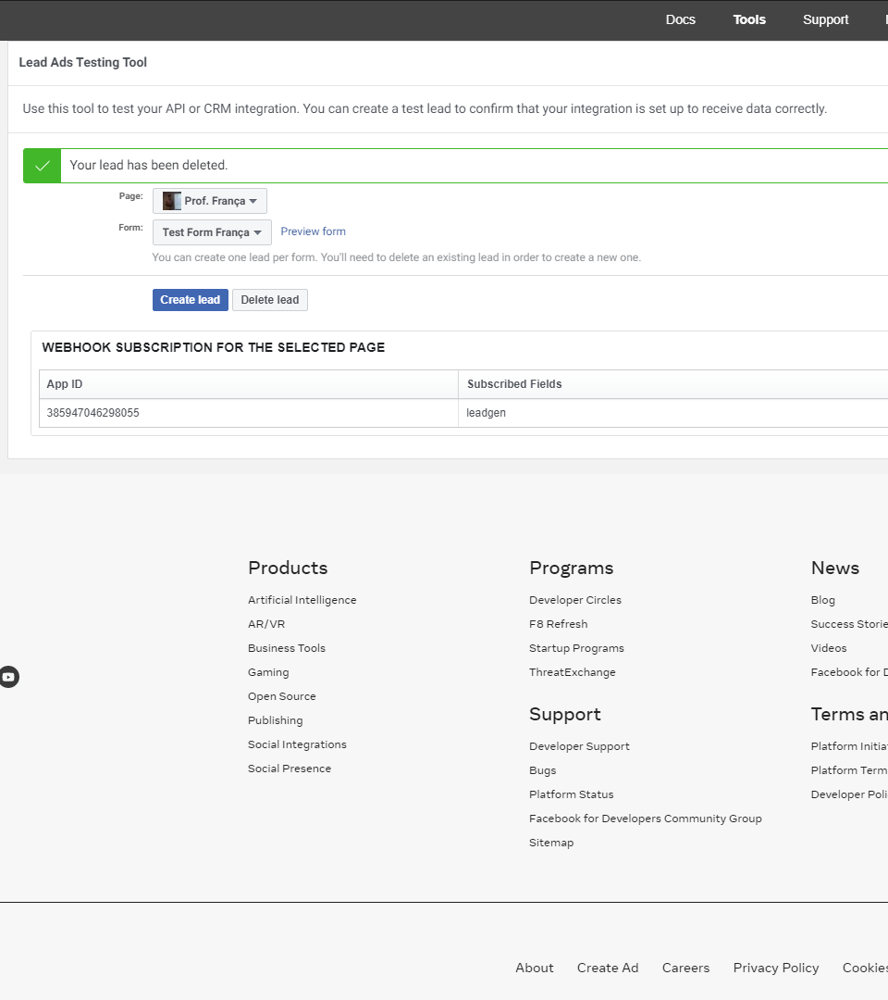

This guide is for the social media agency, the client’s Meta administrator and the CRM developer. It explains what each person needs to provide, where to find it, and how to complete the connection together.
Use the guide in this order
Pages
Task
Who leads
2–3
Gather accounts, forms and access
Agency + client administrator
4–5
Create the app and authorize lead access
Administrator + developer
6–8
Configure the backend, webhooks and CRM forms
Developer
9–10
Test, resolve issues and approve launch
All three
11–12
Set up WhatsApp and agree the live workflow
Number owner + developer
13–14
Complete the handover and reference checks
Agency + administrator
About the screenshots
Two authentic Facebook setup screenshots appear on pages 4 and 9. They come from Meta’s published developer guide from 2022. They illustrate the relevant controls; they are archival reference screens, not captures of the client’s account or a guarantee of the current interface.
Meta changes menu labels and onboarding flows. Use the named function if your menu differs. Current account permissions, app-review requirements and available onboarding options must be checked in the logged-in dashboard.
Sajad HussainSWE, Nippon Toyota16 September 2026 · Version 1.0
NIPPON TOYOTA · CRM INTEGRATIONSETUP GUIDE · SEPTEMBER 2026
01 / PREPARATION · Agency + client administrator
Have these ready before starting
The most useful starting point is a setup call with the person who controls the client’s Meta assets.
Item
What to prepare
Meta login
Your own Facebook account with access to the client’s assets. Complete developer registration and two-factor authentication if prompted.
Business Portfolio
Client’s business name, numeric portfolio ID and the administrator who can assign assets. Identify any assets owned by the agency instead.
Facebook Page
Page name, URL and Page ID for each branch or business generating enquiries.
Advertising account
Ad account name/ID and the campaigns using the selected forms. Access to campaign information may require additional permissions.
Instant Forms
Names and IDs where visible, the owning Page, questions, answer choices and a form preview. Remove real customer data from shared examples.
Business website
The real website and published privacy-policy URL. The developer will confirm any app-domain or data-deletion requirements.
CRM deployment
Developer confirms the CRM login URL, backend API URL and that the intake worker and scheduler are available.
WhatsApp, if included
Business number, its owner, current phone app/provider, account IDs where available, billing contact and approved templates.
Agree responsibilities
Person
Responsibility
Agency
Identify campaigns/forms, explain field meanings and notify us when forms change.
Client administrator
Approve asset access, confirm ownership, complete verification and billing steps.
Sajad / CRM developer
Configure tokens, backend settings, webhook subscriptions, mapping and tests.
Suggested call preparation: laptop, access to Business Settings and Meta Developers, one published form, and a person available to verify the WhatsApp number if that setup is included.
NIPPON TOYOTA · CRM INTEGRATIONSETUP GUIDE · SEPTEMBER 2026
Confirm the business. Open Business info / Business portfolio info. Record its name and ID. Check the business selector before making changes.
Find the Page. Open Accounts → Pages, select the client’s Page and record its ID. Repeat for additional branch Pages.
Find the ad account. Open Accounts → Ad accounts. Record the account associated with the relevant lead campaigns.
Invite the integration contact. Under Users → People, choose the invite option and use the developer’s confirmed email. Assign the relevant assets and tasks. If granting access to another business, use Partners and that business’s ID.
Check leads access. Look for Integrations → Leads access. Select the Page. If the business uses customized leads access, assign the appropriate people/partner and CRM app when it is available.
Confirm acceptance. The developer accepts the invitation and checks that the intended Page and its lead data are accessible. App-dashboard access may also need a separate app-role or business-asset assignment.
Record the result
Detail
Response
Business Portfolio name / ID
Page name / ID / owner
Ad account name / ID / owner
Invitation email or partner Business ID
Administrator handling missing access
Checkpoint: the developer can identify the selected Page and confirm permission to retrieve its leads. Managing ads or viewing the Page alone does not complete the leads-access check.
NIPPON TOYOTA · CRM INTEGRATIONSETUP GUIDE · SEPTEMBER 2026
Check for an existing app first. Reuse a suitable client-owned app only after checking its purpose and existing integrations.
Choose the business/Marketing API route. In a use-case flow, look for the option related to managing ads or lead data. In an older app-type flow, select Business. Menu wording varies; the developer should confirm that the app exposes lead-retrieval and Page-webhook capabilities.
Name the app. Use Nippon Toyota CRM or the client’s approved name. Enter a monitored work email and select the correct Business Portfolio when requested.
Open App settings → Basic. Record the App ID. The developer securely obtains the App Secret. Add the real privacy-policy and data-deletion information where requested. Use only the actual CRM/website domains.
What success looks like
The app appears in My Apps, the correct owner/business is associated with it, and the developer has access to its configuration.
The developer can now configure the lead permissions and Page webhook.

Reference screenshot: Business app-type selection. Meta developer guide, 2022, p. 12 [1]. Modern accounts may start with use cases instead.
If Meta asks for an App Domain, enter the hostname only, without a path. A webhook callback is configured separately and uses the complete HTTPS URL on page 7.
NIPPON TOYOTA · CRM INTEGRATIONSETUP GUIDE · SEPTEMBER 2026
04 / PERMISSIONS & TOKENS · Developer, with the administrator present
Authorize access to the Page’s leads
An access token is a credential that lets the backend read data for the assets it is authorized to access.
A. Enable the needed app permissions
Open the relevant use case’s Customize screen, or App Review → Permissions and Features. The developer checks the permissions needed for the chosen authorization flow.
Permission
Why the developer checks it
leads_retrieval
Retrieve answers submitted through lead forms.
pages_manage_metadata
Manage the app’s Page webhook subscription.
pages_show_list
Identify Pages available to the authorizing account.
Supporting Page / ad permissions
Check the dependencies Meta lists, including Page engagement/ad permissions and advertising access where required for form or campaign reads.
B. Obtain a token for initial testing
Open Graph API Explorer. Select the newly configured app in the Meta App selector and choose a currently supported Graph API version.
Use the token menu to authorize the account with the required permissions. The account must have access to the intended Page and its leads. Complete the asset-selection prompts.
Obtain the appropriate Page access token. If the token menu does not offer it directly, the developer can use the authorized user token to request GET /me/accounts?fields=id,name,access_token and select the matching Page entry.
Test the Page token with a Page/form read. Use Meta’s Access Token Debugger to check app, type, permissions and expiry. Do not share a screenshot containing the token.
C. Prepare production credentials
Before launch, the developer replaces temporary test credentials with a supported production arrangement: an appropriately authorized system-user flow or long-lived Page-token flow. For a system user, the administrator opens Business Settings → Users → System users, assigns the relevant app/assets, and generates the token with the required permissions.
App Review / Advanced Access may be required, especially when accessing assets owned by another business. Complete the requirements shown for the actual app and ownership arrangement before accepting live leads.
NIPPON TOYOTA · CRM INTEGRATIONSETUP GUIDE · SEPTEMBER 2026
05 / CRM BACKEND · Developer only
Prepare the receiving CRM service
Complete this page before clicking “Verify and save” in Meta. The agency supplies access; the developer configures the CRM hosting environment.
The integration code defines this lead webhook path:
Replace YOUR-BACKEND-DOMAIN with the deployed API hostname. The CRM’s browser/login URL may be a different domain. The endpoint must be publicly reachable over HTTPS.
Backend setting
What to configure
META_APP_SECRET
App Secret from the app that sends the webhook; used to verify incoming signatures.
META_VERIFY_TOKEN
A strong random value generated by the developer. Enter the identical value in Meta’s webhook Verify token field.
META_GRAPH_VERSION
Explicitly set a currently supported version confirmed in the app dashboard. Do not copy an old version from screenshots.
INTAKE_SECRETS_JSON
Store the authorized access token under a stable reference, for example main-meta.
INTAKE_ENABLED
Keep false during preparation. Set true when the selected connection/forms and background services are ready for testing.
Worker / scheduler settings
Configure the shared Redis connection and environment, stable intake fingerprint key and CELERY_TASK_ALWAYS_EAGER=false in production.
Example structure only; replace the placeholder securely and preserve other existing entries:
{"main-meta":{"access_token":"REPLACE_SECURELY"}}
Deploy the intake code and apply migrations. Confirm that the web service, worker and scheduler use the same required configuration.
Confirm webhook verification works with the configured verify token. The GET verification handshake and the processing of POST lead events are separate checks.
Confirm background-service health in CRM Lead Intake. The existing deployment blueprint includes a web service, queue, worker and scheduler; the operator must verify their live deployment and costs.
NIPPON TOYOTA · CRM INTEGRATIONSETUP GUIDE · SEPTEMBER 2026
06 / WEBHOOKS · Developer + administrator
Connect Meta notifications to the CRM
Meta app dashboard → Webhooks → Page
Open Webhooks in the app dashboard. If it is not available, add or configure the relevant product/use case that exposes Page webhooks.
Select the Page object and open its subscription/configuration dialog.
Enter the backend callback URL from page 6 and the identical verify-token value configured on the server.
Click Verify and save. A verification error must be resolved before continuing.
Find leadgen in the Page field list and subscribe to it.
The app-level webhook defines where events go. The developer must also subscribe each intended Page to the app. In Graph API Explorer, select the app, supported API version and the authorized Page token.
Select POST and enter the following request, replacing PAGE_ID with the client’s numeric Page ID:
Click Submit and inspect the response. A successful subscription should return a success result.
Switch to GET and inspect the Page’s subscriptions to confirm this app and the leadgen field.
POST /PAGE_ID/subscribed_apps?subscribed_fields=leadgen
GET /PAGE_ID/subscribed_apps
Repeat for every Page included in the integration. Recheck Business Settings → Leads access if the app or authorizing person cannot retrieve leads.
The Page subscription operation is documented in Meta’s maintained Page SDK [2]. A Pixel or Conversions API connection serves a different purpose and is not required just to receive these lead-form enquiries.
NIPPON TOYOTA · CRM INTEGRATIONSETUP GUIDE · SEPTEMBER 2026
07 / CRM CONFIGURATION · Developer, with agency input
Choose forms and map their answers
CRM administrator login → Lead Intake → Connections / Field mappings
A. Identify the selected forms
The agency opens Business Suite → All tools → Instant forms and provides the selected names and owning Page. If a Form ID is not visible, the developer can retrieve it using the authorized Page access:
GET /PAGE_ID/leadgen_forms?fields=id,name,status
B. Add a disabled connection
CRM field
Example / instruction
Name
Client Meta Leads
Origin
META
Source
Select the agreed source from Admin Lists; add it there first if missing.
Secret reference
main-meta, matching the key in INTAKE_SECRETS_JSON.
Activation time
Agreed starting time for this connection. Choose carefully; identifiers and activation times cannot be edited later.
C. Add each selected form
Choose the connection. Enter a recognizable name, the Meta Form ID as external id, its page id, and the activation time. Page ID is required for Meta even if the shared form screen does not mark it with an asterisk. Create the form disabled.
D. Save and preview its mapping
Example form answer
CRM destination
full_name / Customer name
name
phone_number / Mobile number
phone
Email / interested model / city
email / model_interest / city
Branch / campaign-specific values
Map supplied answers or set agreed defaults and value aliases.
Open Field mappings, select the form, configure the exact answer labels and save a version. Preview a safe sample. Name and a valid Indian phone number are required for intake; populated model/branch values must match CRM lists.
Form listing and the form’s leads edge are exposed by Meta’s maintained SDK [2, 3].
NIPPON TOYOTA · CRM INTEGRATIONSETUP GUIDE · SEPTEMBER 2026
Select the client’s Page and one of the configured forms. Confirm that its IDs match the CRM configuration.
If the tool says a test lead already exists, remove that test entry using Delete lead before creating another. This is the tool’s test entry, not a request to delete CRM customer records.
Create a test lead. Where a form preview is available, enter a valid test name and phone number. Default dummy answers may fail the CRM’s phone validation.
Open CRM → Lead Intake → Receipts. Confirm receipt arrival, then inspect its state and the mapped details. Valid new enquiries should appear in the unassigned lead pool under healthy processing conditions.
If the receipt is NEEDS_REVIEW, check the phone format, required answers, choice values and duplicate matches. Correct/reprocess or resolve the duplicate through the review controls.

Reference screenshot: Meta Lead Ads Testing Tool, extracted from Meta’s developer guide, 2022, p. 16 [1]. The view shows the relevant upper portion of the published screen; current styling may differ. IDs shown belong to the source’s example.
Acceptance checks
□ Name and phone arrive correctly. □ Model, city, branch and campaign are correct. □ No unintended extra lead appears when the same event is retried. □ Duplicate or incomplete enquiries enter the review workflow. □ Test each selected Page/form and confirm who assigns new leads to sales staff.
Record the Page, Form ID, lead/test ID, submission time and CRM receipt/lead ID. Share these identifiers for troubleshooting; omit tokens and unnecessary customer information.
NIPPON TOYOTA · CRM INTEGRATIONSETUP GUIDE · SEPTEMBER 2026
Open the app’s App Review / Permissions and Features / Publish area, as available. Confirm the required access levels, app status and any business-verification steps for the actual assets and ownership arrangement.
If Meta requests a review, provide a clear description of the lead-retrieval use case, the required permissions, applicable privacy/deletion information, and a recording or test instructions demonstrating the workflow. The client administrator supplies verification documents when requested.
Common problems and the next check
Symptom
What to check
Business / Page not visible
Correct portfolio selected? Invitation accepted? Does the logged-in person have asset access?
Public HTTPS backend URL, exact path, deployed endpoint and matching verify token. Check redirects and server errors.
Webhook verifies, but no receipts
Page subscribed to this app? leadgen enabled? Intake enabled? Correct Page/Form IDs and activation time?
Receipt fails or connection pauses
Expired/revoked token, missing lead access or unavailable form. Fix access/credentials, then use Resume/Retry in CRM.
Receipt says NEEDS_REVIEW
Missing/invalid answers, unsupported configured choices or duplicate phone. Inspect the reason and resolve it in Lead Intake.
Receipt remains unprocessed
Check worker/scheduler health, queue connectivity and shared settings. Do not repeatedly submit the same customer enquiry.
Campaign is blank
Check attribution on the lead and permissions for campaign retrieval. Some test or organic submissions may lack ad attribution.
Agree ownership after launch
Nominate a contact for new forms, changed campaigns, token replacement and failed imports. The CRM includes periodic reconciliation for enabled forms, but someone must monitor errors and paused connections. Do not assume all new forms are connected automatically.
□ Production access confirmed □ Tests approved □ Activation time agreed □ Monitoring contact assigned □ Agency knows how to report form changes
NIPPON TOYOTA · CRM INTEGRATIONSETUP GUIDE · SEPTEMBER 2026
Complete this section if WhatsApp is part of the project. Lead-form integration can be configured independently.
Current setup
What to do next
WhatsApp Business app on a phone
Confirm whether staff must keep using the app. Have the developer check available coexistence/onboarding or migration options before changing the number’s registration.
Existing provider such as WATI, Interakt or AiSensy
Share provider name, account/dashboard access, API documentation, plan limits and webhook support. Decide whether to integrate through that provider or plan a migration.
Existing direct Meta Cloud API
Identify the owning business, app, WABA, Phone Number ID, templates and credential owner. Review the existing configuration before adding subscriptions.
No business WhatsApp setup
Agree a client-owned number, display name, verification contact, billing owner and the supported onboarding route.
For direct Meta Cloud API setup
In Meta for Developers, select the appropriate app and add/configure the WhatsApp product or business-messaging use case. If the existing app cannot support it, the developer should create a suitable app under the correct business.
Open WhatsApp → API Setup / Getting Started. Confirm the selected Business Portfolio. Use the provided test setup before registering or moving the customer-facing number.
Add a consenting test recipient as required by the setup screen and send the sample message. This tests Meta connectivity; it does not yet connect the CRM.
For the business number, follow the supported onboarding process, confirm the business display name and have the owner complete SMS/voice verification and registration steps. Check two-step verification requirements with the developer.
Record identifiers, not secrets
Identifier
Where to look
WABA ID
Business Settings → Accounts → WhatsApp accounts, or the app’s WhatsApp setup panel.
Phone Number ID
WhatsApp API Setup / Getting Started for the selected actual business number.
Business phone number
The number customers will see, including its country code.
A WABA ID, Business Portfolio ID and Phone Number ID refer to different objects. A Phone Number ID is not the actual telephone number. Meta’s official Cloud API reference explains the required assets [4]; number registration is covered separately [5].
NIPPON TOYOTA · CRM INTEGRATIONSETUP GUIDE · SEPTEMBER 2026
11 / WHATSAPP PRODUCTION · Developer + WhatsApp administrator
Prepare credentials, messages and replies
A. Generate a suitable production token
For a direct Meta setup, open Business Settings → Users → System users. Create/select the integration system user, assign the relevant app and WhatsApp assets, then generate a token for the app. Confirm the necessary whatsapp_business_messaging and whatsapp_business_management permissions and record its expiry/rotation owner. The temporary setup token is for testing. [4]
B. Create or review message templates
Open Business Suite → All tools → WhatsApp Manager → Message templates. Agree the text, language, variable fields and purpose of each message, then submit templates for approval. Record exact approved names and language codes.
Proposed message
Agency / client decision
Enquiry acknowledgement
Send immediately, after qualification, or only on staff action?
Salesperson introduction
Which name, branch and contact details should the message include?
Reassignment notice
Should the customer be informed when their salesperson changes?
Customer replies
Who responds, and in which inbox: CRM, provider or supported phone-app workflow?
The business must have the recipient’s opt-in and honor opt-outs. Business-initiated conversations require approved templates. Free-form replies are allowed within 24 hours of the customer’s last message; outside that window, use approved templates. A phone number in a lead form alone does not establish messaging permission. [6]
C. Connect the webhook and complete the CRM work
The developer implements and supplies the WhatsApp-specific callback URL and verify token, then configures it in the app’s WhatsApp/Webhooks settings.
Subscribe to the relevant messages notifications and subscribe the app to the intended WABA. Verify incoming replies and delivery updates. WABA subscription is separate from configuring the callback. [7]
Confirm billing is ready for paid messages and check any account restrictions or verification requests. With an existing provider, use its supported token/webhook process instead.
Test an approved template with a consenting recipient. Check variable substitution, delivery status, reply handling and opt-out behavior before enabling the agreed automation.
Existing preview records must not be sent later as a backlog. Agree fresh trigger rules and launch approval after the provider integration is ready.
NIPPON TOYOTA · CRM INTEGRATIONSETUP GUIDE · SEPTEMBER 2026
12 / HANDOVER · Agency + client administrator
Return these details to Sajad
Complete the identifiers and status below. Use “Not set up” or name the person who can help if an item is unavailable.
Account / detail
Response
Agency contact / email / phone
Client administrator / contact
Business Portfolio name / ID
Facebook Page name / ID
Ad account name / ID
Meta app name / App ID / owner
Selected forms / Form IDs
WhatsApp number / current provider
WABA ID / Phone Number ID
Invitation accepted / leads access status
Billing / credential replacement contact
Setup call availability
Attach where available
□ Selected form previews and exact question labels □ Vehicle-model choices and form-to-branch/campaign mapping □ Approved WhatsApp templates, language codes and variable meanings □ Current consent wording and reply/opt-out owner □ Any error message, affected account ID and time of the failed test
A screenshot of a menu or error is useful when an option is missing. Hide tokens, secrets and unrelated customer details before sending it.
NIPPON TOYOTA · CRM INTEGRATIONSETUP GUIDE · SEPTEMBER 2026
13 / REFERENCES & SIGN-OFF · For the agency and client administrator
Reference links and final confirmation
Links in this PDF are clickable. Meta tools may require login and the appropriate account permissions.
[1] Meta / fbsamples, Lead Ads – Conversion Leads – Developer Guide (2022), pages 12 and 16. The two screenshots reproduce published Meta setup screens; they are archival visual references. Repository archived in 2025. Screenshots and Meta interface remain credited to their respective owners.
Preparation note: direct Meta lead-retrieval/app-creation documentation returned access limits during preparation. This guide combines the project’s implemented CRM behavior, Meta’s public SDK/reference material and account-navigation guidance. Confirm current permissions, review requirements and menu choices in the logged-in dashboard; no approval or launch date is guaranteed.